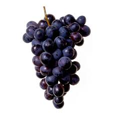

Lista de Frutas:
- Morango:
- Banana:
- Kiwi:
- Uva: 
- Giovane Barbosa da Silva
- Ryan Gabriel Uchoa de Lima
Um morango de qualidade é vermelho, firme, suculento e com sabor doce e levemente ácido. Ele deve ter uma textura crocante, sem manchas ou sinais de amadurecimento excessivo. Além disso, é cultivado de forma sustentável, preservando suas propriedades nutricionais e garantindo frescor e sabor.
Uma banana de qualidade tem casca brilhante, sem manchas, e é firme, mas macia ao toque. Seu sabor é doce e suave, com uma textura cremosa. Rica em potássio, vitaminas e fibras, é uma opção saudável e energética, cultivada com cuidado para garantir frescor e sabor.
Um kiwi de qualidade tem casca firme, sem manchas, e cede levemente ao toque, indicando maturação. Sua polpa é verde vibrante, com sementes crocantes, e o sabor é doce com toque ácido. Rico em vitamina C, fibras e antioxidantes, é uma opção saudável e saborosa.
Uma uva de qualidade é firme, com casca brilhante, sem manchas e de sabor doce e suculento. Seus grãos devem ser uniformes, crocantes e refrescantes. Além disso, são ricas em antioxidantes, vitaminas e fibras, sendo uma opção saudável e saborosa.
Valores:
Vender Açaí nós ensina valiosas lições:
1° "Confiança e Transparência: Da mesma forma que uma boa loja de açaí precisa conquistar a confiança de seus clientes, na vida, ser transparente e honesto em nossas ações cria relações mais sólidas e significativas."
2° "Inovação Constante: A busca por novos sabores ou formas de melhorar a experiência de nossos clientes é uma forma de refletir sobre a importância de inovar na vida pessoal e profissional, sem perder nossa essência."
3° "Atendimento ao Outro: O cuidado e atenção com os outros, seja no atendimento em uma loja ou nas relações pessoais, mostram o valor que damos às pessoas e ao ambiente ao nosso redor. O simples gesto de ser atencioso pode fazer toda a diferença."